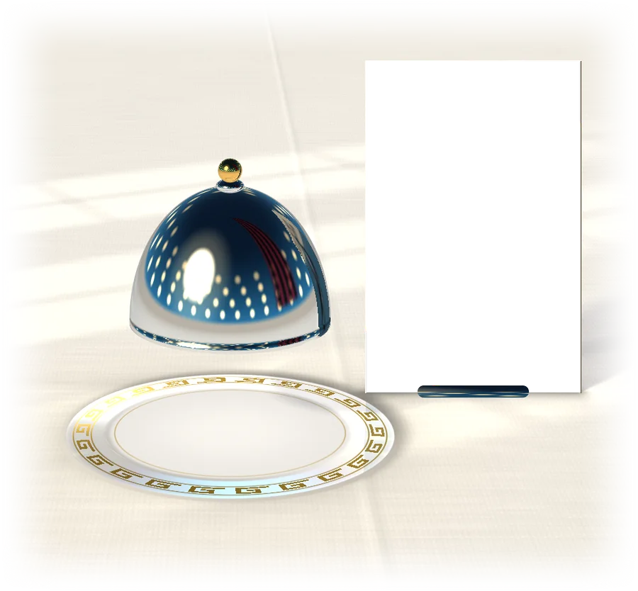
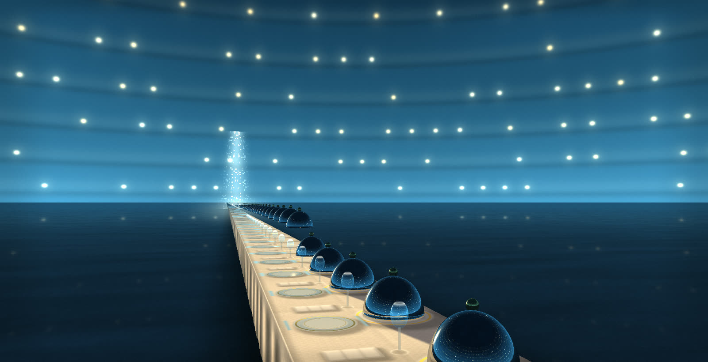
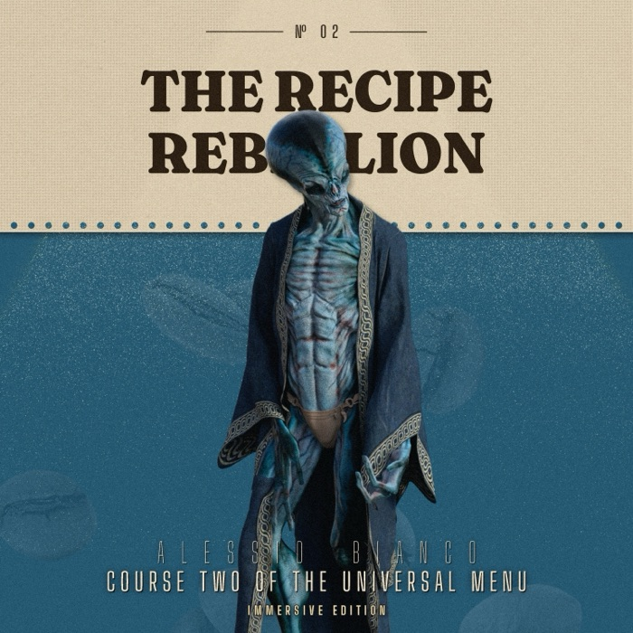

Second courseBook two
The Recipe Rebellion
He found the rebellion he had stopped hoping for, and staked Earth on it before asking one question.

"The Guild convenes. The question is put. It is always the same question."
Editions
Read it, hear it, see it served
Read on the page
E-bookon any screenComing
Paperbackprinted, for the shelfComing
Hardcoverthe keeping editionComing
Listen in the dark
Audiobookunabridged narrationComing

Immersive audiobooknarration in score and soundComingAudio dramaa full-cast dramatisationComing
See drawn
Graphic novelthe story, panel by panelComing
Everything still in the kitchen is listed with the publisher.
See the book at Orb & Ink
Take your seat